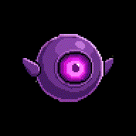
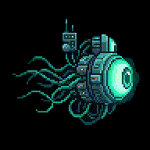
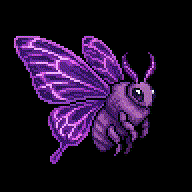
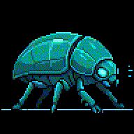
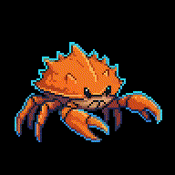
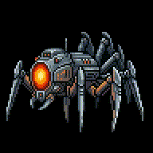

← weaver 미리보기 / 몬스터 애니 8종
몬스터 애니 — 8종 인게임 (움직이는 GIF)
PixelLab animate_object v3 · 9프레임. 부유류 = idle(드리프트=Unity) / 다리·날개류 = 이동 애니. 아래는 모두 재생되는 GIF(폰/브라우저).
🔹 dot 단서·death(기화)·효과는 Unity 런타임 오버레이 — 여기 본체 애니에 안 들어감. 톤·속도 조정 필요한 것 골라주세요.

🟩 슬라임
idle 부유·숨

🟪 외눈 오브
idle 호버·눈

🔵 삼중눈
idle 깜빡·촉수

🟣 박쥐나방
fly 날갯짓

🟥 뿔 돌진수
run 네 다리

🟦 갑각 비틀
walk 곤충 다리

🟧 가시 게
scuttle 집게

⬜ 거미 드론
run 금속 다리
판정: 8종 애니 OK인가요? · 톤/속도/프레임 조정할 것 · 다리류 idle(등장·미리보기) 추가로 뽑을지 (현재는 이동만).
→ OK면: 스테이징 `assets/weaver/monster/` + asset-manifest 재현 레시피(object_id·animation_id) → unity 핸드오프. 🔧 효과·death·구조물/장애물 애니 = Unity 런타임 명세 동봉.
→ OK면: 스테이징 `assets/weaver/monster/` + asset-manifest 재현 레시피(object_id·animation_id) → unity 핸드오프. 🔧 효과·death·구조물/장애물 애니 = Unity 런타임 명세 동봉.
weaver · 디자인 세션 · 2026-06-17 · PixelLab animate_object v3 · 몬스터 8종 idle/이동 · unlisted